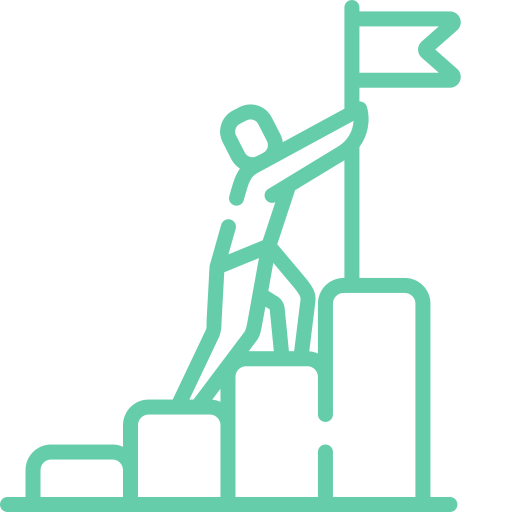
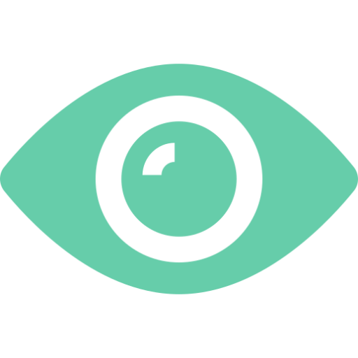
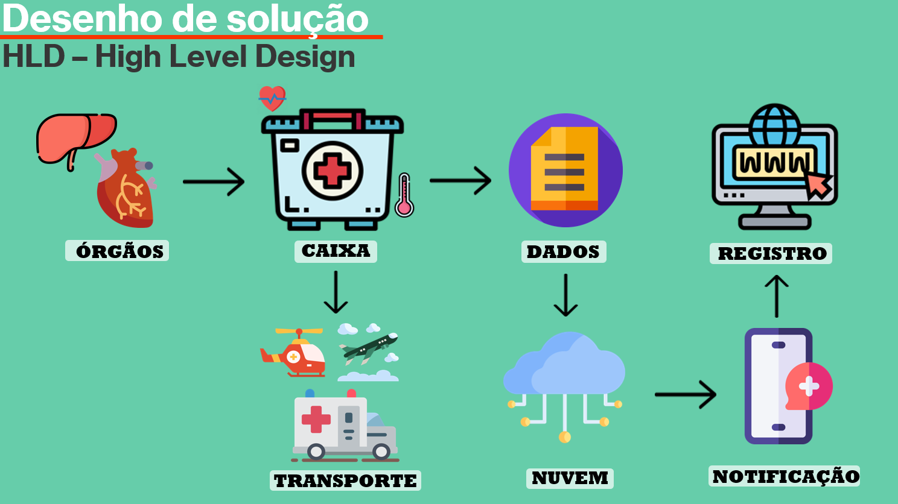

Nós nos importamos com as pessoas que necessitam de doações de orgãos
A Cyberlife através de monitoramento da temperatura dos orgãos, vem para ajudar a aréa
da saúde a salvar vidas

Missão
Buscar reduzir o número de perdas de órgãos no trasnporte, por causa da falta de monitoramento adequado.

Visão
Visamos melhorar esse ramo de mercado com mais segurança e controle para o mesmo.
Valores
Respeito pelas vidas, efiência, empatia, trabalhar com muita dedicação e segurança.
Quem somos
Bruno Ricardo
Fundador
Jorge Uliam
Analista
Matheus Pinheiro
Analista
Guilherme Miranda
Programador
Gabriel Alvares
Programador
Nós da Cyberlife desenvolvemos uma solução para diminuir o grande número
de falecimento de órgãos, monitorando em tempo real o local de armazenamento
desses órgãos durante o seu transporte, transmitindo os dados para a nossa
plataforma online, onde é possível verificar a temperatura do órgão durante
o transporte para possíveis falhas na conservação por temperatura.
Como funciona

O orgão é transportado por helicópteros, aviões ou ambulâncias, dentro de uma caixa isotérmica, equipada com um sensor de temperatura capaz de transmitir os dados de temperatura para a nuvem, onde serão gerados para o usuário e por fim o registro de todo o transporte.
CONTATO
ENDEREÇO
RUA HADDOCK LOBO, 594
SÃO PAULO - SP
CYBERLIFEHEALTHCARE@GMAIL.COM
TELEFONE
(11) 98613-6555